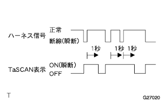
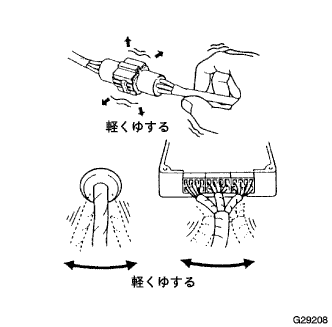

EBD付きABS&BAシステム（4WD） ＥＣＵデータモニター／アクティブテスト |
ECUデータモニター(瞬断系を除く)
IGスイッチOFFにして、SST(TaSCAN)をDLC3に接続する。
IGスイッチONにして、SST（TaSCAN）の画面表示に従い、ECUデータを確認する。
| 項目名 (TaSCAN表示) | 項目名解説 | 点検条件 | 参考値 | 異常時の点検項目 |
|---|---|---|---|---|
| ソレノイドSFRH | フロント右保持ソレノイドの状態を表す | ABS非作動時←→作動時 | OFF←→ON |
|
| ソレノイドSFRR | フロント減圧ソレノイドの状態を表す | ABS非作動時←→作動時 | OFF←→ON |
|
| ソレノイドSFLH | フロント左保持ソレノイドの状態を表す | ABS非作動時←→作動時 | OFF←→ON |
|
| ソレノイドSFLR | フロント左減圧ソレノイドの状態を表す | ABS非作動時←→作動時 | OFF←→ON |
|
| ソレノイドSRRH | リヤ右保持ソレノイドの状態を表す | ABS非作動時←→作動時 | OFF←→ON |
|
| ソレノイドSRRR | リヤ右減圧ソレノイドの状態を表す | ABS非作動時←→作動時 | OFF←→ON |
|
| ソレノイドSRLH | リヤ左保持ソレノイドの状態を表す | ABS非作動時←→作動時 | OFF←→ON |
|
| ソレノイドSRLR | リヤ左減圧ソレノイドの状態を表す | ABS非作動時←→作動時 | OFF←→ON |
|
| ソレノイドリレー | ソレノイドリレー作動を表す | IGスイッチON時 | OFF←→ON |
|
| ABSモーターリレー | モータリレー作動を表す | モータ非作動←→モータ作動 | OFF←→ON |
|
| ストップスイッチ | ストップランプスイッチ作動を表す | ブレーキペダル踏み込み←→開放 | ON←→OFF |
|
| パーキングブレーキ | パーキングブレーキの作動を表す | パーキングブレーキ作動←→解除 | ON←→OFF | パーキングブレーキスイッチ系統 |
| エア抜き駆動可否 | アクチュエータエア抜き駆動可または不可状態を表す | アクチュエータエア抜き駆動可←→不可 | 可←→否 | - |
| テストモード | - | テストモード時←→通常モード時 | テストモード←→通常モード | - |
| ABS制御中信号FR | 制御中か否かを表す | ABS作動時 | 制御中←→制御外 |
|
| ABS制御中信号FL | 制御中か否かを表す | ABS作動時 | 制御中←→制御外 |
|
| ABS制御中信号RR | 制御中か否かを表す | ABS作動時 | 制御中←→制御外 |
|
| ABS制御中信号RL | 制御中か否かを表す | ABS作動時 | 制御中←→制御外 |
|
| スピードセンサFR | 車輪速度を表す |
|
| 車速センサ信号系統 |
| スピードセンサFL | 車輪速度を表す |
|
| 車速センサ信号系統 |
| スピードセンサRR | 車輪速度を表す |
|
| 車速センサ信号系統 |
| スピードセンサRL | 車輪速度を表す |
|
| 車速センサ信号系統 |
| ECU電源電圧 | ECU電圧状態を表す | - | 低電圧←→正常 | 電源電圧系異常 |
| Gセンサ(GL1) | Gセンサの値(加減速度)を表す | 減速時、加速時 | 連続して変化 | Gセンサ系信号 |
| Gセンサ(GL2) | Gセンサの値(加減速度)を表す | 減速時、加速時 | 連続して変化 | Gセンサ系信号 |
| ダイアグコード数 | ダイアグコード数を表す | － | 0-255個 | － |
ECUデータモニター(瞬断系)
IGスイッチOFFにして、SST(TaSCAN)をDLC3に接続する。
IGスイッチONにして、SST(TaSCAN)の画面表示に従い、ECUデータモニターを表示させ、瞬断モニターする部位の項目を選択する。
| 項目名 (TaSCAN表示) | 項目名解説 | 点検条件 | 基準 | 関連DTC |
|---|---|---|---|---|
| 瞬断(スピードセンサFR) | アクチュエータASSY-スピードセンサFR RH間ワイヤハーネスの瞬断(断線)状態を表す |
|
| C0200/31 |
| 瞬断(スピードセンサFL) | アクチュエータASSY-スピードセンサFR LH間ワイヤハーネスの瞬断(断線)状態を表す |
|
| C0205/32 |
| 瞬断(スピードセンサRR) | アクチュエータASSY-スピードセンサRR RH間ワイヤハーネスの瞬断(断線)状態を表す |
|
| C0210/33 |
| 瞬断(スピードセンサRL) | アクチュエータASSY-スピードセンサRR LH間ワイヤハーネスの瞬断(断線)状態を表す |
|
| C0215/34 |
表示切替で‘折れ線表示’に切替える。
|  |
折れ線グラフでON/OFFの状態を点検する。
|  |
折れ線グラフの表示を見ながら、ECU-センサ間のコネクター、ワイヤハーネスを軽くゆする。
アクティブテスト点検
IGスイッチOFFにして、DLC3にSST(TaSCAN)をセットする。
IGスイッチONにして、SST(TaSCAN)の画面表示に従い、アクティブテストを表示する。
アクティブテスト中に確認するデータモニター項目を選択して実行キーを押す。
実施するアクティブテスト項目を選択して実行キーを押し、画面表示の指定キーを操作して各テストのON←→OFF切り替えを実行する。
| 項目名 | テスト内容 | 制約条件 |
|---|---|---|
| ABSソレノイド | 各輪制御ソレノイドのON←→OFFが可能 | ソレノイドリレーONかつSPD=0 km/hにて可能 |
| ソレノイドリレー | リレーのON←→OFFが可能 | SPD=0 km/hにて可能 |
| ABSモ－タリレー | リレーのON←→OFFが可能 | SPD=0 km/hにて可能 |
| ABSランプ | ON←→OFFが可能 | SPD=0 km/hにて可能 |
| ブレーキウォーニングランプ | ON←→OFFが可能 | SPD=0 km/hにて可能 |